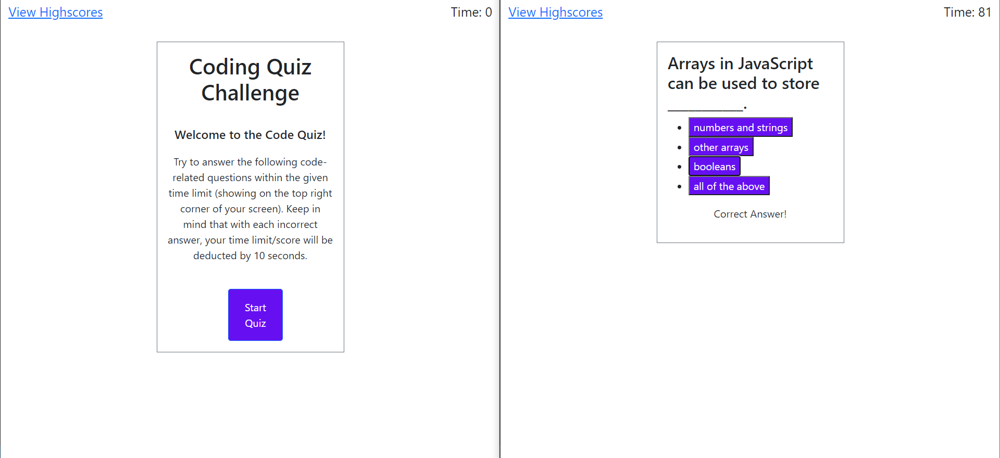
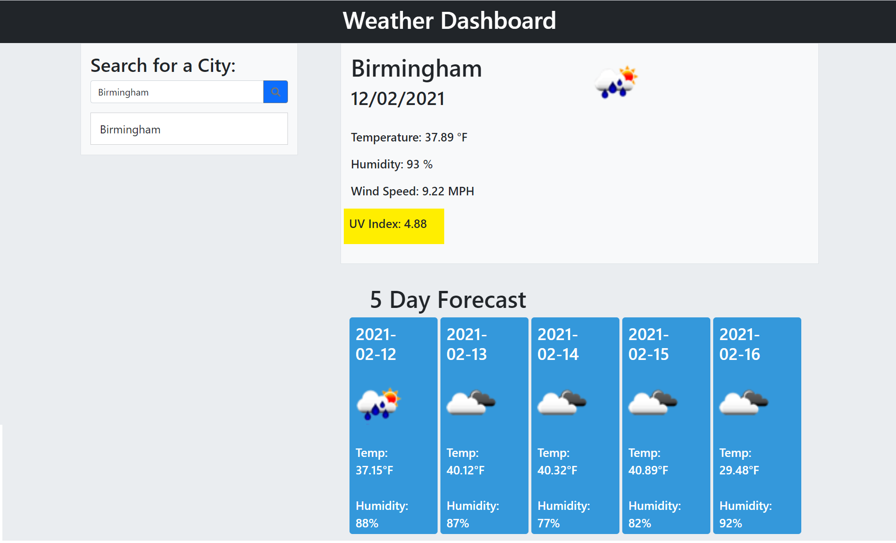
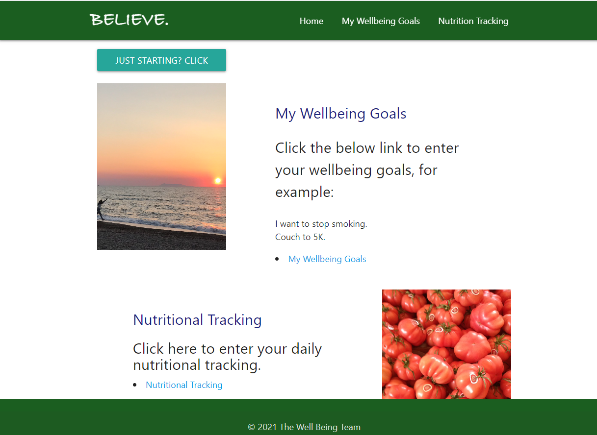
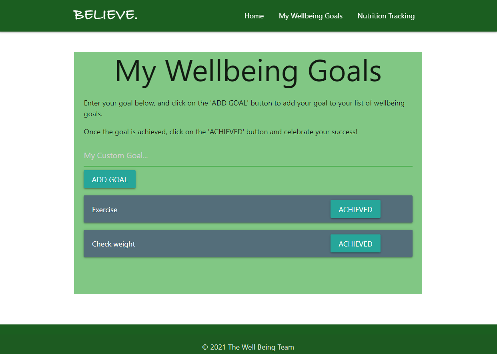
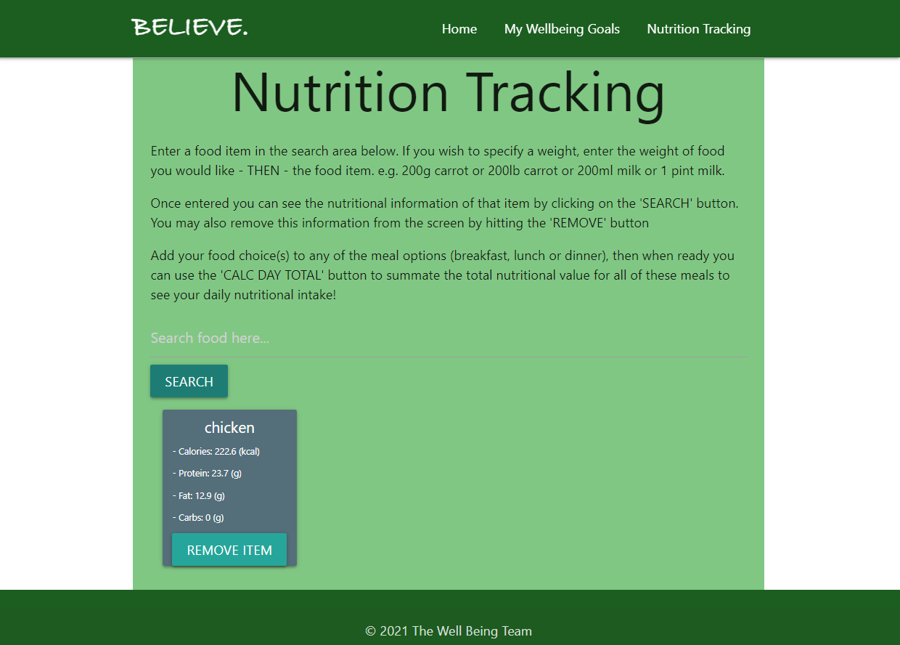

About Me

Introduction
I, Maryum Bokhari, am a student currently working on a venture to become a Full-Stack Web Developer. I am
a
hardworking and determined individual, working my way to set a successful career in engineering and web
development.
This website provides details about my life, hobbies and ambitions that you may find interesting and
inspiring. For more information about my lifestyle and
background, have a look at the images in the Porfolio section.
Originally from Pakistan, I have achieved my basic education from my hometown, Lahore, and then
moved to England in 2016 to continue my pursuit in becoming an engineer, from Aston University. In 2020,
I joined a Bootcamp at University of Birmingham, to learn and become an expert at coding.
My Achievements
My basic educational achievements include the following:
- 8 O level subjects, passed with 2 A*'s and 6 A's, from Convent of Jesus and Mary, Lahore, Pakistan, in 2014.
- 3 A level subjects, passed with an A in Chemistry, and 2 B's in Mathematics and Biology, in 2016.
- A Chemical Enigeering Honours Degree from Aston University, in 2020.
My Programming Work
Being a student at University of Birmingham, as mentioned earlier, I learned how to code and create web applications, as a part of the Full-Stack Web Development course. Some such projects that I submitted as a part of the assessment criteria for the course included the following three, shown as examples to demonstrate my programming skills:
- The Code Quiz - this is a rather entertaining and very interactive web application that asks
coding-related questions to the user, under a time limit. It has been created by myself, and is designed
to be very simplistic and user-friendly. Take a look:
You may find the deployed webpage here.
Check out the Github repository here.
- My Weather Dashboard - ah, my favourite... this is the website I created for the purpose of
checking the current and future weather forecast of any city/country around the world, made possible
with the use of weather API's. It stores the name of any location searched, so thay you may have another
look! Here's the forecast of Birmingham shown on my Weather Dashboard:
You may find the deployed webpage here.
Check out the Github repository here.
- "Believe." - A Group Project - this is a website created by myself and three other people in my
group. This is yet another highly simplistic and a user-friendly platform created for the purpose of
tracking your health and wellbeing to improve your
general lifestyle; it has made use of all front-end programming tools, including API's (one of which
served the purpose of importing nutritional value of the food we eat on a daily basis). The website
consists of three web-pages, all shown below:
The "Home" page:

The "My Wellbeing Goals" page:

The "Nutrition Tracking" page:
Yet again, you may find the deployed webpage here.
Check out the Github repository too here.
Resources About Myself
I thought it would be helpful to provide some extra resources and information, for my portfolio viewers to learn more about my career choice(s), achievements, experiences, and other useful information. I included them in this card and listed them below:
My Curriculum VitaeMy LinkedIn Profile
My Github Profile
My Phone Number:
+44 (0) 7452 894 940
My Email Address:
maryumbokhari97@gmail.com